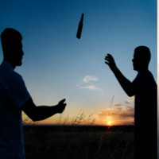
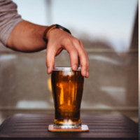

Història
Sobre Nosaltres
Coneix la nostra història
-

1996-1999
Els nostres inicis
La nostra empresa va començar com una petita
bodega familiar l'any 1996 i va seguir així durant 4 anys els quals es dedicava a la venta local.En aquella època degut a que els beneficis que produïa es va arrivar a plantejar un possible tancament. -
1999-2002
Neix l'empresa
A finals de l'any 99, va nèixer tal i com es coneix avui en dia l'empresa Beer Corporation Ja que la bodega familiar va experimentar una constant demanda de productes, es va decidir crear una empresa per poder multiplicar exponencialment la elaboració de productes artesanals.
-

2012
Importació a nivell internacional
A principis de l'any 2012 es va dur a terme una nova etapa a l'empresa, la qual implicava importar marques de cervesa d'altres països a nivell internacional. Això va supondre un gran avanç en l'empresa
i ens va permetre donar-nos a conèixer i cridar l'atenció d'un públic més exigent. -

2014-2015
L'empresa creix
El 2014, degut a la gran demanda de productes, tant d'el·laboració pròpia com de les recents incorporades importacións es va dur a terme un procés per obrir noves sucursals dins del territori espanyol. A finals de 2015 ja s'havien inaugurat 2 sucursals, una a Madrid i l'altra a Galicia. Degut al constant creixement que està experimentant Beer Corporation, s'estima que a finals de 2018 s'obri alguna nova planta de producció en territori Francès.
-
Forma
part
d'ella!